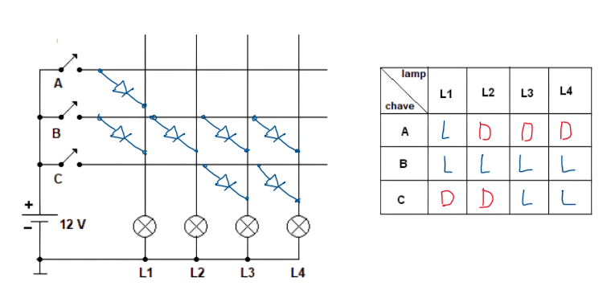

O diodo é um dos componentes eletrônicos mais fundamentais e está presente em praticamente todos os circuitos. Ele permite que a corrente elétrica passe em apenas um sentido — do anodo (a) para o catodo (k).
O circuito mais simples que utiliza um diodo (retificador ou de sinal) é composto por uma fonte de tensão contínua (DC), um resistor e o diodo ligados em série.
Como o diodo tem terminais diferentes (anodo e catodo), ele pode ser ligado de duas maneiras:
1) Polarização direta
2) Polarização inversa
Quando o anodo está conectado ao polo positivo da fonte e o catodo ao polo negativo, o diodo está polarizado diretamente e conduz corrente elétrica.
A tensão sobre o diodo é dada por:
Vd = Vak
Isso significa que ligamos a ponteira vermelha do multímetro no anodo (a) e a preta no catodo (k). Se o anodo estiver em potencial mais positivo, o diodo conduzirá corrente.
Em um diodo de silício, a queda de tensão típica é de aproximadamente 0,7 V. Assim, a tensão Vak ≈ 0,7 V quando o diodo conduz.
Para haver corrente no circuito, a tensão da fonte deve ser maior que 0,7 V. A corrente é limitada pelo resistor em série:
Id = (Vf – 0,7) / Rs
Por isso, sempre devemos usar um resistor em série ao ligar um diodo, para limitar a corrente e evitar danos ao componente.
Quando o anodo está ligado ao polo negativo e o catodo ao polo positivo, o diodo está polarizado inversamente e não conduz corrente elétrica.
Nessa condição, a tensão Vak é negativa. A barreira de potencial interna da junção PN aumenta, impedindo o movimento de cargas.
O diodo comporta-se como um circuito aberto — toda a tensão da fonte aparece sobre o diodo, e praticamente nenhuma corrente circula. Pórem lembre-se que todo diodo possuí uma tensão de ruptura(maxíma tensão que ele aguenta inversamente) que se passar dela ele pode ser danificado(queimado).
Portanto:
Id = 0
Vrs = 0
Vd = Vak = -Vf
| Condição | Comportamento | Equações |
|---|---|---|
| Diodo polarizado diretamente | O diodo conduz corrente elétrica. |
Id = (Vf – 0,7) / Rs Vd = 0,7 V |
| Diodo polarizado inversamente | O diodo não conduz corrente (comporta-se como aberto). |
Id = 0 Vd = -Vf |
Considere um circuito com uma fonte de tensão contínua (Vf), um resistor Rs e um diodo de silício.
Calcule as correntes e tensões para diferentes valores de resistência.
Exemplo: Se Rs = 100 Ω e a fonte for de 5 V:
Id = (5 – 0,7) / 100 = 0,043 A = 43 mA
Se Rs for reduzido, a corrente aumenta — mas o diodo continua com Vd ≈ 0,7 V.
É o resistor que limita a corrente no circuito.
Quando o diodo é invertido, praticamente nenhuma corrente flui. A tensão da fonte aparece quase toda sobre o diodo.
Se a tensão inversa for muito alta (acima da tensão de ruptura), o diodo pode ser danificado permanentemente.
As matrizes de diodos são arranjos formados por vários diodos interligados, usados principalmente para representar informações binárias (0 e 1) ou controlar a passagem de sinais elétricos em pontos específicos de um circuito.
Elas funcionam como um “mapa” onde cada diodo representa uma ligação possível entre uma linha (entrada) e uma coluna (saída). Quando há um diodo em um ponto da matriz, a corrente pode passar (representando um “1” lógico); quando não há diodo, a corrente não passa (representando um “0” lógico).
Imagine uma tabela com linhas e colunas — como se fosse um tabuleiro de batalha naval.
Cada ponto de cruzamento pode ter:
• Um diodo presente → corrente passa → sinal “1”
• Nenhum diodo → corrente bloqueada → sinal “0”
Isso é muito usado em circuitos digitais simples e em memórias antigas (ROMs de diodos), onde cada diodo “soldado” em um ponto específico representava um dado gravado permanentemente.
Exemplo:
Assim, os diodos funcionam como interruptores fixos que determinam onde o sinal elétrico pode fluir. Esse princípio foi a base das primeiras memórias digitais e ainda é usado em teclados de computadores e calculadoras, onde cada tecla é ligada por um ou mais diodos que identificam sua posição.
Resumindo: a matriz de diodos transforma conexões elétricas em informações digitais — é como escrever com eletricidade usando 0 e 1.
Diodo polarizado diretamente: conduz corrente, queda de tensão ≈ 0,7V (silício).
Diodo polarizado inversamente: não conduz, comporta-se como circuito aberto.
O resistor em série é essencial para limitar a corrente e proteger o diodo.